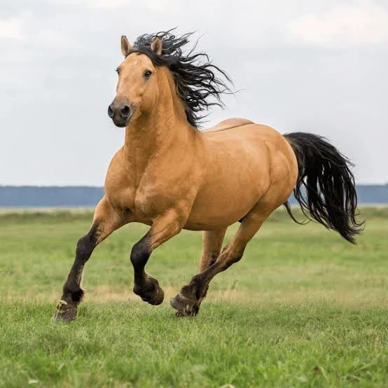
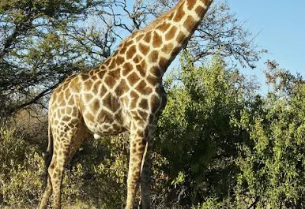

Le cheval est l'ancètre de l'auto, il ne vais pas aussi vite mais il est très gentil

voici un lien a la page wikipedia du cheval (lien vers la page wiki)
La girafe a un long coup pour pouvoir mangé les feuilles

voici un lien a la page wikipedia de la girafe (lien vers la page wiki)
Le conchon d'inde est un animal très petit, il est plein de fourure et a une personilité très différent des autre animaux

voici un lien a la page wikipedia du cochon d'inde (lien vers la page wiki)